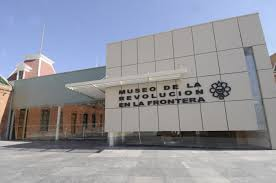
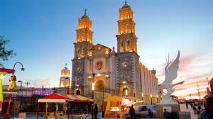
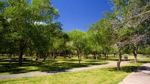
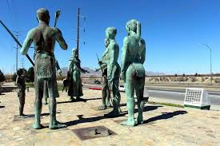
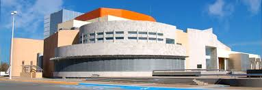
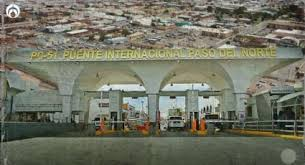

LUGARES TURISTICOS
Museo de la Revolución en la Frontera (MUREF): Ubicado en un edificio histórico que sirvió como cuartel durante la Revolución Mexicana. Aquí se encuentran exposiciones sobre la historia de la región, la Revolución y la vida de Pancho Villa.

Catedral de Ciudad Juárez: Esta iglesia, también conocida como la Catedral de Nuestra Señora de Guadalupe, tiene una rica historia y es uno de los símbolos religiosos más importantes de la ciudad.

Plaza de la Mexicanidad: Este monumento histórico fue inaugurado en 1999 y conmemora la identidad y la cultura mexicana, en especial la importancia de Ciudad Juárez en la historia de México y la Revolución Mexicana.
Parque Chamizal: Además de ser un parque recreativo, el Chamizal es un lugar histórico que marca el acuerdo entre México y Estados Unidos sobre la delimitación de fronteras en 1963.

Museo de Arte de Ciudad Juárez (MACJ): Este museo alberga colecciones de arte y objetos históricos que reflejan la riqueza cultural de la región.
Casa de Adobe: Es una de las casas más antiguas de la ciudad y fue hogar de varios personajes históricos, como Don Juan María de Urrea.

Monumento a los Indios: Es un importante monumento histórico dedicado a los pueblos originarios de la región, especialmente a los que habitaron lo que hoy es Ciudad Juárez.

Centro Cultural Paso del Norte: Un espacio cultural donde se realizan diversas actividades artísticas, culturales y educativas, en un lugar que tiene gran valor histórico.

Puente Internacional Santa Fe: Aunque es un puente de conexión entre Estados Unidos y México, también tiene un componente histórico, ya que fue un importante cruce de personas y mercancías a lo largo de los años.
